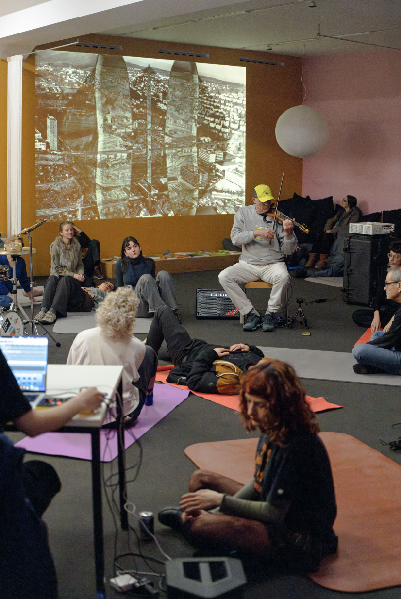
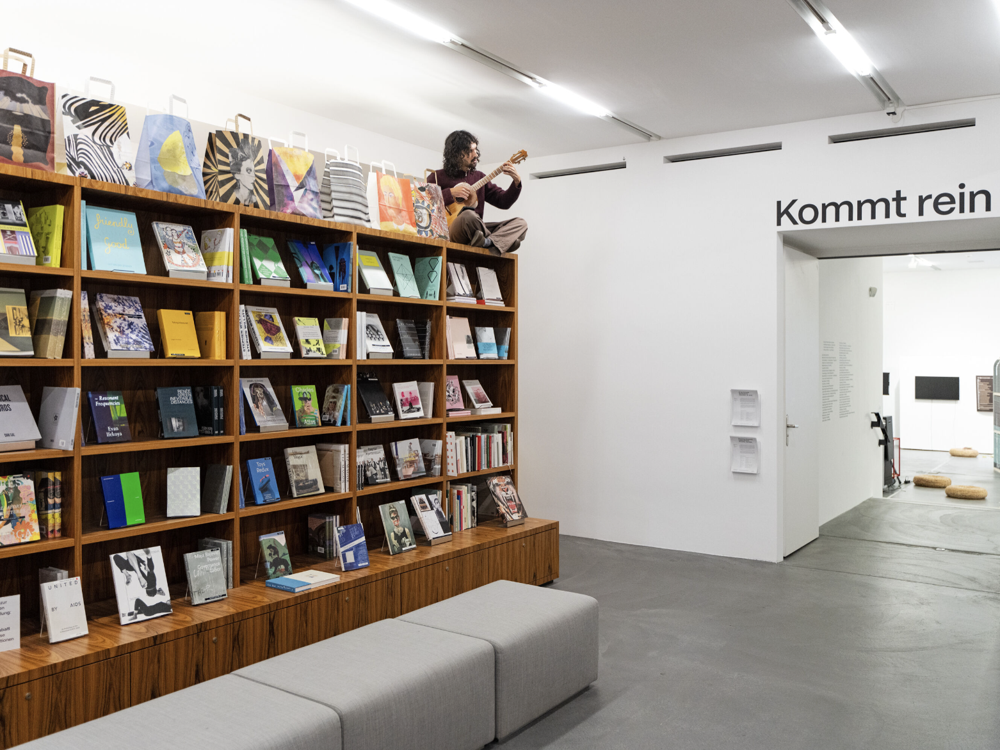

Plakat Vorderseite A3, 2024
Die Künstlerinnen und Kollaborateurinnen Jeanne van Heeswijk und Sophie Mak-Schram, als Teil einer wachsenden Gruppe aus der Umgebung des Migrosmuseum für Gegenwartskunst, haben Menschen, die sich im feministischen Streikhaus, im Stadtorchester und in der WIM (Werkstadt für improvisierte Musik Zürich) organisieren, eingeladen, gemeinsam an und mit den Schwellen des Museums nachzudenken.
Animation Flyer, 2024
Für die Konzertreihe durfte ich ein Plakat und einen Flyer gestalten.
Gemeinsam mit dem Publikum haben wir an drei verschiedenen Stationen durch Bewegungs- und Musikimprovisationen den Veränderungen unserer Stadt zugehört.

Konzert im Migrosmuseum, 2024
Konzert im Migrosmuseum, 2024
Konzert im Migrosmuseum, 2024
bezahltes Kund*innenprojekt